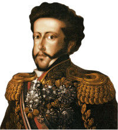

Independência do Brasil

A Independência do Brasil é algo importantíssimo para o país, pois marca o fim do domínio de Portugal sobre o Brasil e a conquista da autonomia.
A tentativa de independência já tinha ocorrido por diversas vezes, levando muitos à morte em luta desse ideal como a Inconfidência Mineira e a Revolução Pernambucana. Mas tudo começou quando a família real portuguesa veio para o Brasil em 1808. Dom João VI cumpria fielmente os tratados com a Inglaterra, que havia se comprometido de defender Portugal das tropas de Napoleão e proteger a familia Real no litoral Brasileiro. Assim, quando chegaram ao Brasil, tratou logo de abrir os portos brasileiros para as outras nações, já representando uma conquista, pois a colônia brasileira, nesse ponto, estava livre do antigo pacto colonial.
Além disso, D. João realizou uma reforma urbanística na cidade do Rio de Janeiro que foi equiparada a Reino Unido de Portugal. Mas essas mudanças trouxeram revoltas a elite portuguesa que queria que o Brasil voltasse a ser colônia, dependendo totalmente de Portugal. Em agosto de 1820 ocorreu a Revolução Liberal do Porto, essa reforma daria limite aos poderes do Rei e transformaria novamente o Brasil numa colônia.
Os revolucionários portugueses exigiam a volta do Rei Dom João VI para legitimar as transformações que aconteciam. Com medo de perder sua autoridade de rei, ele nomeou o filho Dom Pedro I como príncipe regente do Brasil. E retornou a Portugal em 1821.
Em 1822, D. Pedro I foi intimado à voltar para Portugal, para que eles pudessem recolonizar o Brasil, mas ele não aceitou o chamado. Depois desse acontecimento, D. Pedro tomou várias medidas que não agradaram a metrópole, pois estas aproximava o Brasil da independência.
Portugal não desistia, durante uma viagem para São Paulo, D. Pedro recebeu uma carta que exigia sua volta. Eles ameaçavam o príncipe de invasão militar caso não retornasse. Nesse momento, ele levantou a espada e gritou "Independência ou morte!", nas margens do rio Ipiranga, marcando a data em que o Brasil alcançou a independência, sendo ex-colônia de Portugal, dia 7 de Setembro de 1822.
No mesmo ano, D. Pedro foi declarado imperador do Brasil, através de um documento oficial enviado para a coroa portuguesa. E aos poucos o príncipe estabeleceu relações com outros países de forma que eles reconhecessem a independência do país, uma das primeiras nações a reconhecer foi os Estados Unidos.
No dia 07 de setembro é comemorada a Independência do Brasil. Nesse dia, ocorrem desfiles cívicos e festas para a data em que o Brasil passou a ter a sua autonomia política em 1822.